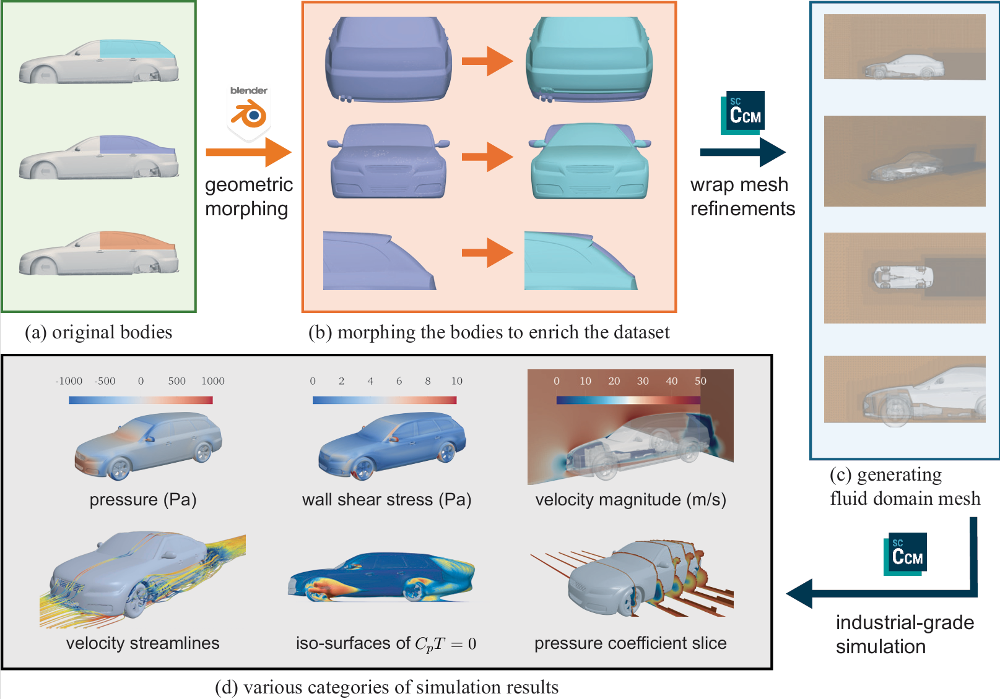
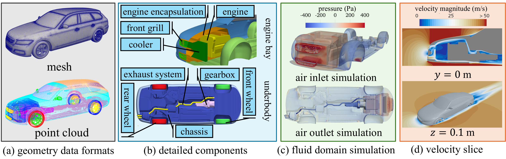
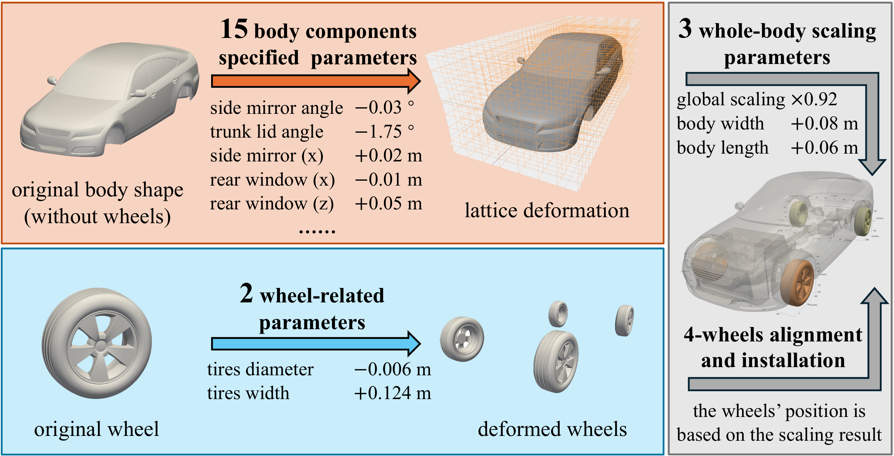
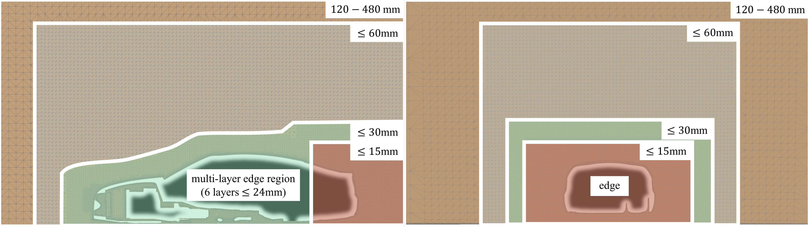
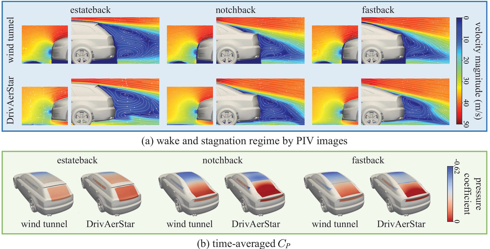

Jiyan Qiu 1
jiyanq0430@gmail.com
NVIDIA
Lyulin Kuang 1
lkuang@nvidia.com
NVIDIA
Guan Wang 2
wangguan.nantes@gmail.com
Baidu, INC.
Yichen Xu 1,3,4,5
xuyc@stu.pku.edu.cn
NVIDIA / Peking University
Leiyao Cui 3,4,5
cuileiyaony@gmail.com
Peking University
Shaotong Fu 1
shaotongf@nvidia.com
NVIDIA
Yixin Zhu 3,4,5,6 ✉
yixin.zhu@pku.edu.cn
Peking University (Corresponding Author)
Ruihua Zhang 1 ✉
ritaz@nvidia.com
NVIDIA (Corresponding Author)
1:NVIDIA; 2:Baidu, INC.; 3:Peking University; 4:State Key Lab of General AI, Peking University; 5:Beijing Key Laboratory of Behavior and Mental Health, Peking University; 6:Embodied Intelligence Lab, PKU-Wuhan Institute for Artificial Intelligence
Vehicle aerodynamics optimization is fundamental to automotive engineering, drag reduction, noise minimization, and vehicle body stability through complex fluid dynamics simulations.
Traditional approaches rely on computationally expensive CFD simulations that limit design exploration or simplified models that compromise accuracy. Machine learning methods offer promising alternatives but require high-fidelity training data that has been largely unavailable in the public domain.
The gap between academic machine learning research and industrial CFD applications remains unbridged due to the absence of datasets meeting rigorous engineering standards.
Here we present DrivAerStar, a comprehensive and reproducible dataset of 12,000 high-precision automotive CFD simulations, created by 3 basic rear designs and 20 fine-tuned CAD parameters by the FFD algorithm, with all configurations simulated using the industry-standard STAR-CCM+ software.
Unlike existing datasets, DrivAerStar provides complete engineering data that has been thoroughly validated against wind tunnel experiments with discrepancies below 5\%, including aerodynamic coefficients, surface pressures, and velocity fields. Our benchmarks demonstrate that machine learning models trained on this dataset achieve industrial-grade prediction accuracy while reducing computational costs by orders of magnitude.
This dataset establishes a foundation for data-driven aerodynamic design methodologies that can transform automotive development processes.
Beyond automotive applications, DrivAerStar represents a paradigm for integrating high-fidelity industrial-grade physics-based simulations with artificial intelligence, potentially extending to diverse engineering disciplines where computational constraints currently limit design optimization.
Description: DrivAerStar dataset generation pipeline demonstration (geometric morphing, mesh generation, CFD simulation visualization)

(a) Beginning with three canonical DrivAer reference bodies (Estateback, Notchback, and Fastback) as the geometric foundation, (b) we apply parametric morphing through Blender to systematically vary 13 vehicle components, including greenhouse (top), rear diffuser (middle), and trunk lid (bottom). (c) Next, we generate refined hexahedral-dominant meshes in STAR-CCM+ with precise wheel alignment and boundary layer resolution to capture complex flow phenomena. (d) Finally, we leverage industrial-grade CFD simulations that produce comprehensive flow visualizations---including pressure distribution, wall shear stress, velocity fields, streamline patterns, separation regions (via \(C_P=0\) iso-surfaces), and pressure coefficient slices revealing key aerodynamic structures.

The dataset incorporates (a) We provide different geometry data formats in DrivAerStar. While mesh (top) is our primary data representation, point cloud (bottom) representations enable alternative computational approaches and geometry analysis. (b) Detailed components, including the complete engine bay compartment assembly (top) and vehicle underbody (bottom), distinguish DrivAerStar from previous ones. (c) Accurate internal air flow simulation(showing inlet simulation (top) and outlet (bottom)), enabled by our precise internal components modeling, is capable of supporting research on more automotive systems. (d) Velocity field cross-sectional diagrams, including the internal flow field of the engine compartment at centerline (\(y=0\) m) and the external flow field at the tire axle plane (\(z=0.1\)m).

Our parametric deformation framework begins with the baseline model and applies three morphing operations: (i) Body components morphing through 15 controlled parameter adjustments, including dimensional modifications and component repositioning, which is displayed on top-left; at the same time, we conduct (ii) wheel morphing with precise tire parameter control. (bottom-left); followed by (iii) whole body scaling and wheel installation (right), we control the 3 whole-body scaling parameters and align the wheels according to the position determined by scaling. This three-stage FFD approach enables systematic generation of geometrically diverse yet aerodynamically realistic vehicle configurations.

(a) Longitudinal section at \(y=0\) m revealing four nested refinement zones: far-field (120-480 mm), intermediate domain (\(\leq\) 60 mm), near-body region (\(\leq\) 30 mm), and high-resolution zone (\(\leq\) 15 mm) surrounding the vehicle. The boundary layer implementation incorporates a dedicated 6-layer edge refinement with total thickness under 24 mm to capture viscous phenomena. (b) The transverse section at \(x=3.12\) m demonstrates a consistent refinement strategy with graduated cell density approaching vehicle surfaces. This approach enables accurate resolution of wake structures while maintaining computational efficiency.

Comparison between Loughborough University Large Wind Tunnel experimental measurements and DrivAerStar simulations across three standard rear body configurations using 25%-scale models. All simulations conducted at 40 m/s (144 km/h) with identical boundary conditions.